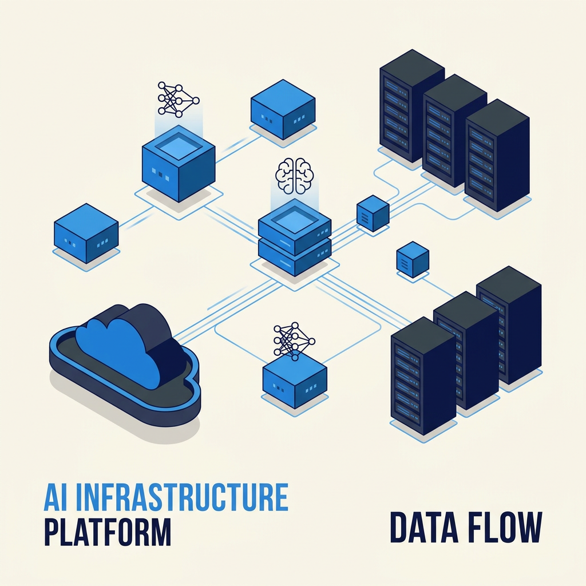
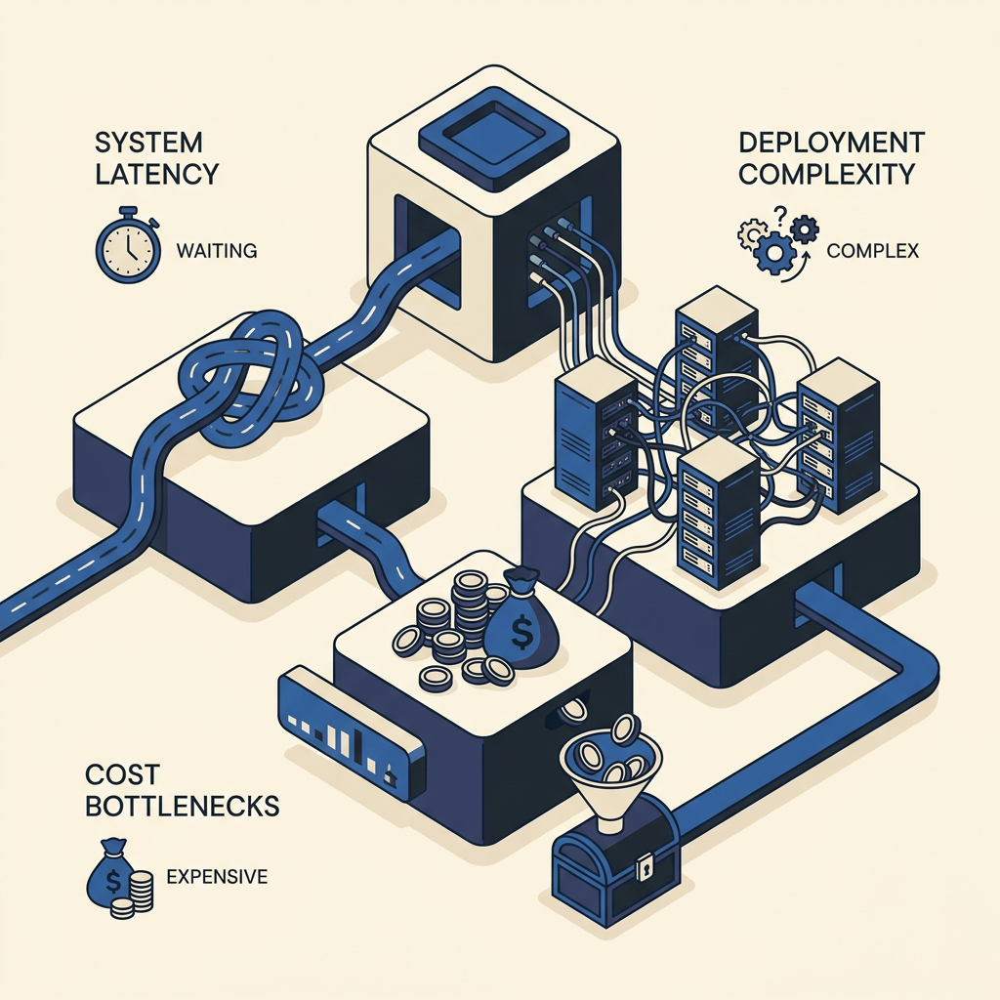
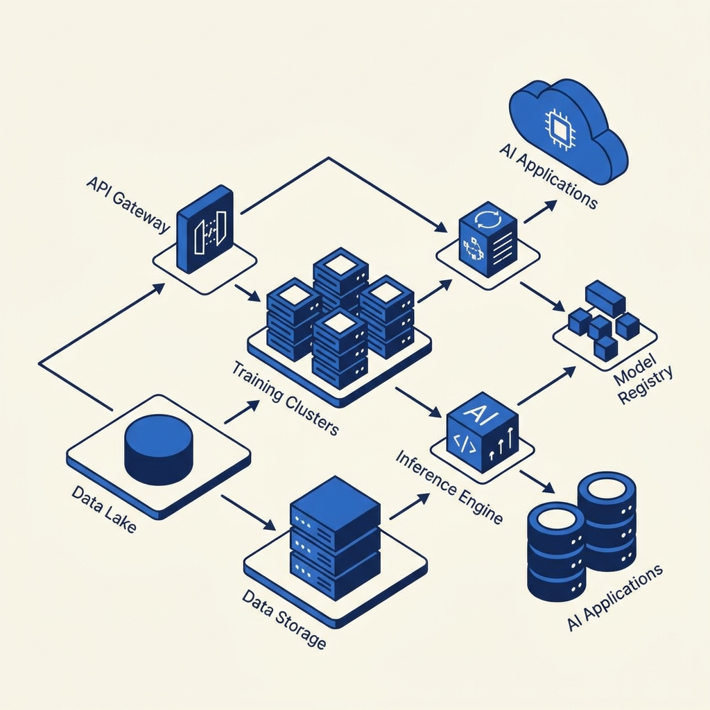
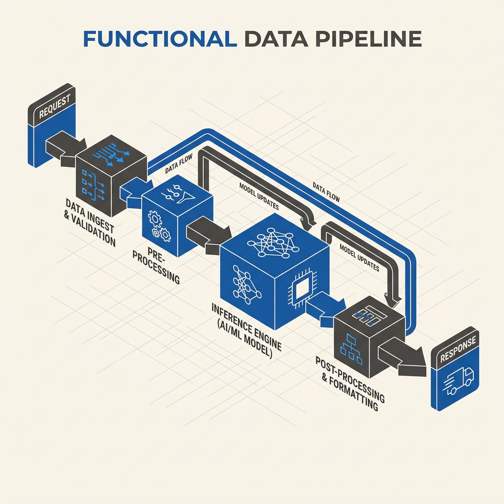

Deploy, manage, and scale massive AI models on your own hardware with the simplicity of serverless. Built for teams who demand complete control, extreme low latency, and zero vendor lock-in.


Today's generative AI deployments force a false choice: surrender your data and margins to closed-source APIs, or spend months wrestling with fragile, tangled infrastructure.
Latency spikes. Costs spiral. 89% of enterprise AI pilots stall at the deployment phase because orchestration is too complex and brittle.
We built a unified, open-source orchestration layer that turns weeks of DevOps into a single command. High-throughput inference, auto-scaling, and advanced memory management—all running within your secure VPC.
A pristine, highly organized data pipeline from request to inference to response. Built for speed and reliability.

Cloud infrastructure components routing through API gateways and inference engines.

Step-by-step data processing pipeline optimized for extreme low latency.
From HuggingFace model to highly available production API in under 60 seconds.
Maximize your GPU utilization and slash inference costs by up to 70% with intelligent batching.
Built-in vector and graph database orchestration that never leaves your local network.
Transparency isn't just a philosophy; it's a critical security requirement. By remaining radically open-source, we guarantee no hidden telemetry, no forced upgrades, and absolute data sovereignty.
Complete data privacy and secure VPC deployment.
Low-latency APIs for consumer-facing AI applications.
Compliant, auditable, and sovereign infrastructure.
Run state-of-the-art models locally with zero friction.